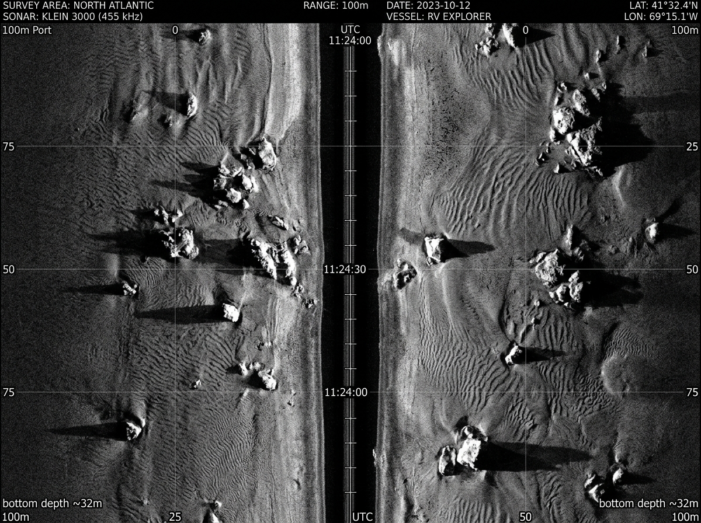
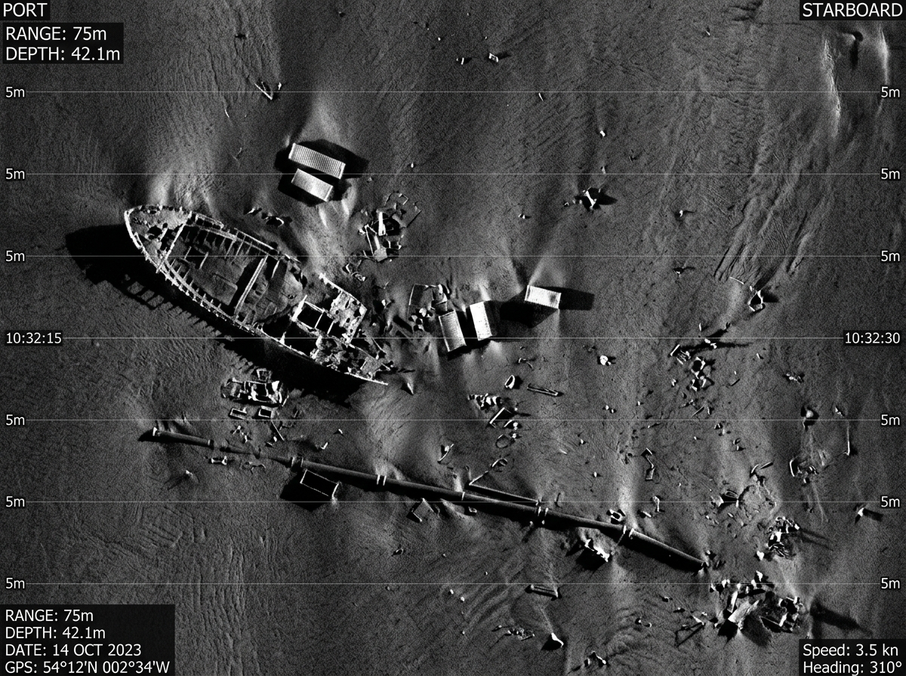

SMART INDIA HACKATHON 2026
SONARIS converts raw hydroacoustic side-scan sonar streams into actionable, geotagged debris intelligence — detecting subsea man-made objects with physical shadow ray-tracing and automated false-positive filtering.

Sand ripples, sediment ridges, and rock outcrops — natural backscatter patterns that SIRENA learns to reject with >94% specificity.

Shipwrecks, cylindrical containers, and pipelines — man-made returns surfaced with millimetre precision and shadow ray-tracing validation.
Side-scan sonar imagery contains multiplicative speckle noise, bathymetric shadows, and variable benthic structures. The core engineering feat is discerning which returns represent true man-made objects, and which are natural geological backscatter.
Multiplicative hydroacoustic interference that diffuses object boundaries.
Bathymetric depressions casting void shadows resembling independent objects.
Sediment ridges, rock fields, and reef outcroppings mimicking rigid debris.
Dynamic beam spreads and altitude shifts producing non-uniform spatial resolution.
Vessel pitch, roll, yaw, and towfish heave distorting linear swath profiles.
A continuous hydroacoustic pipeline transforming raw acoustic returns into structured geospatial intelligence.
Each stage handles a specific aspect of hydroacoustic signal processing, false-positive elimination, and automated geotagging.
Decodes raw hydroacoustic logs and synchronizes them with real-time GNSS and inertial navigation systems while correcting for dynamic towfish layback.
Removes water column blind spots and straightens acoustic slant-range distortions to yield an orthorectified, true-to-scale map of the benthic floor.
Suppresses multiplicative acoustic speckle noise while sharpening subtle contrast differences and preserving sharp acoustic shadow edges.
Deploys a cascaded deep convolutional architecture to isolate man-made anomalies and classify targets into pipelines, wrecks, cylinders, and ghost nets.
Applies physical sonar ray-tracing principles to verify candidate targets against acoustic shadow angles and metric height expectations, weeding out false alarms.
Converts confirmed detection pixel offsets into millimeter-accurate WGS-84 geographic coordinates, eliminates swath overlaps, and compiles mission dossiers.
Real-time survey metrics, class distributions, and confidence telemetry from the latest hydroacoustic inspection run.
Deployable across commercial hydrography, offshore energy, environmental protection, and defense sectors.
Rapidly catalogue and map lost containers, industrial waste, and discarded metal debris across ports and shipping routes.
Detect unburied pipeline spans, seabed scouring, free-spanning risers, and dropped object hazards along subsea routes.
Assists hydrographic offices and marine archaeologists in characterizing historic wreck structures and hull degradation.
Pinpoints lost or abandoned synthetic fishing nets smothering coral outcroppings and benthic marine life.
Low-power edge model support for onboard subsea vehicles, enabling real-time anomaly alerts without umbilical cable bandwidth.
Dramatically shortens target localization timelines for diver teams and ROVs, reducing costly support ship charter days.
The multidisciplinary engineering and technology team behind the SIRENA autonomous side-scan sonar intelligence system.
Distinguished faculty and institutional leaders guiding our hackathon innovation.